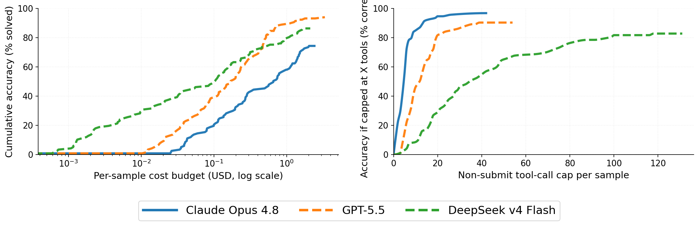

Beyond Success Rate: Cost-Aware Evaluation of Offensive and Defensive Security Agents
Frontier Security Research · July 2026
Abstract
Security-agent evaluations commonly measure peak offensive capability under generous inference budgets. Such measurements are useful but incomplete: every reasoning step, tool call, telemetry query, and enrichment request consumes budget.
Keywords: cybersecurity benchmarks, AI agents, Cybench, BOTS, cost accounting
1 Introduction
Security-agent evaluations often ask how far a model can go when it is given a generous inference budget and an offensive task. Operational security requires a different view.
We therefore make cost the common axis for comparing offensive and defensive security agents [1, 2].
2 Evaluation Design
We evaluate Cybench and BOTS v1 in a common agent harness. The operating point includes the model, task family, cost limit, tools, and scoring rule.
The two benchmarks expose distinct relationships among reasoning, tool use, and cost.
3 Results
Offensive CTF performance improves with additional test-time compute. The marginal value of spend differs substantially across models.
For defensive SOC investigation, raw tool volume is less predictive. Successful operating points depend on disciplined telemetry navigation and selective enrichment.
3.1 Resource scaling
Figure 1 compares the cost-success curves for representative models. Reporting the operating curve exposes headroom that a single aggregate score obscures.
All cost totals distinguish model-token spend from priced external-tool calls.

4 Discussion
Cost-aware evaluation makes operational fit visible and helps separate benchmark capability from harness behavior.
5 Limitations
Provider routing, cost limits, and concurrency are not invariant across every operating point.